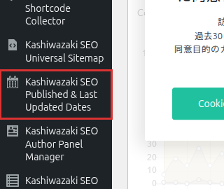

インストール・初期設定
Kashiwazaki SEO Published & Last Updated Dates のインストール方法と、日付表示に必要な基本設定を説明します。
インストール手順
GitHub のリポジトリからプラグインの ZIP ファイルを入手し、WordPress 管理画面の プラグイン > 新規追加 > プラグインのアップロード からアップロードします。または、プラグインのフォルダを /wp-content/plugins/ に置きます。
アップロード後（またはフォルダを置いた後）、プラグイン の一覧で「有効化」をクリックします。
管理画面の左メニューに「Kashiwazaki SEO Published & Last Updated Dates」が追加されます。クリックして設定画面を開きます。

有効化直後から、既定の設定（投稿で、記事の前後両方に日付を表示・JSON-LD を出力）で動き始めます。必要に応じて以下の設定を調整してください。
基本設定
表示位置
公開日・更新日をコンテンツのどの位置に表示するかを設定します。
| 表示位置 | 説明 |
|---|---|
| 記事の前 | 記事本文の直前に日付を表示します。 |
| 記事の後 | 記事本文の直後に日付を表示します。 |
| 記事の前後両方 | 記事本文の前と後の両方に日付を表示します（有効化直後の既定）。 |
| 自動表示しない（ショートコードのみ） | 記事本文には挿入しません。ショートコードや PHP 関数で好きな場所に表示します（詳細設定参照）。 |
投稿タイプ別設定
日付を表示する投稿タイプを選択できます。投稿（post）、固定ページ（page）、カスタム投稿タイプごとに有効・無効を切り替え、有効にした投稿タイプごとに「公開日を表示」「更新日を表示」を選べます。
| 投稿タイプ | 説明 |
|---|---|
| 投稿（post） | 通常のブログ投稿。デフォルトで有効です。 |
| 固定ページ（page） | 固定ページ。必要に応じて有効にします。 |
| カスタム投稿タイプ | テーマやプラグインで追加されたカスタム投稿タイプ。個別に有効・無効を設定できます。 |
固定ページは通常「更新日」の概念が薄いため、デフォルトでは無効になっています。会社概要やサービスページなど、更新頻度の高い固定ページがある場合は有効にすることを推奨します。
デザインパターン
日付表示のデザインを4種類のパターンから選択できます。
| パターン名 | 説明 |
|---|---|
| バッジスタイル | 丸みを帯びた現代的なバッジデザイン（既定）。 |
| シンプルテキスト | 装飾のないシンプルなテキスト表示。 |
| ボックススタイル | 角のあるボックス型のデザイン。 |
| ライン付きスタイル | 左端にカラーラインが入るデザイン。 |
JSON-LD構造化データ
本プラグインは DigitalDocument + CreateAction + UpdateAction スキーマの JSON-LD を、対象投稿タイプの個別ページに自動出力します。この機能はデフォルトで有効で、設定画面の「構造化マークアップ」でオン・オフできます。各項目の意味は詳細設定を参照してください。
出力されるJSON-LDの例:
{
"@context": "https://schema.org",
"@graph": [
{
"@type": "DigitalDocument",
"@id": "https://example.com/post-url/#doc",
"url": "https://example.com/post-url/",
"datePublished": "2024-01-15T10:30:00+09:00",
"dateModified": "2024-06-20T15:45:00+09:00"
},
{
"@type": "CreateAction",
"@id": "https://example.com/post-url/#create",
"startTime": "2024-01-15T10:30:00+09:00",
"object": { "@id": "https://example.com/post-url/#doc" }
},
{
"@type": "UpdateAction",
"@id": "https://example.com/post-url/#update",
"startTime": "2024-06-20T15:45:00+09:00",
"object": { "@id": "https://example.com/post-url/#doc" }
}
]
}JSON-LDの出力は Googleリッチリザルトテスト や Schema.org Validator で確認できます。